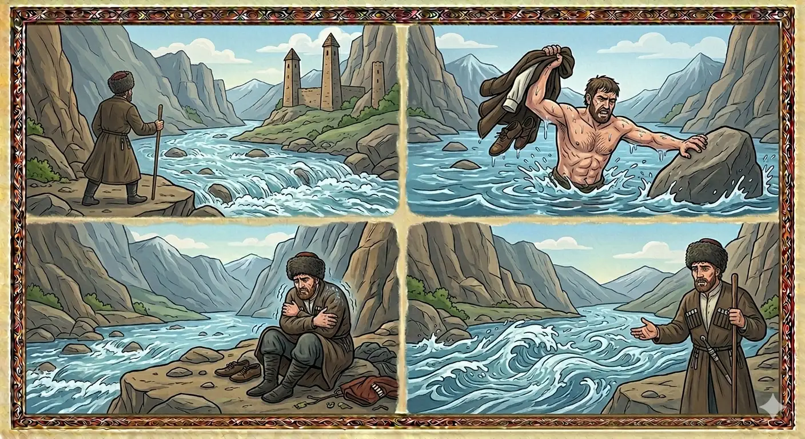

И.А. Дахкильгов. Хьехаме дувцарш - поучительные рассказы-притчи.
И.А. Дахкильгов. Хьехаме дувцарш - поучительные рассказы-притчи. Из ингушского фольклора.

Хьайна хала деций хьона?
Лоамара ӀокӀала воагӀаш хинна лоамаро ӀодоагӀача Эса тӀа эттав. ЧӀоагӀа бирса хиннад хий. ХӀеттолца цох дехьа вала вийза хиннавац из лоамаро. ТӀера хӀамаш Ӏо а яха, хала-атта, боккхача балийца хила дехьа ваьннав. Ховш ма дий, Эса мичча хана а шала шийлагӀа долаш долга. Гарренце ше эгавешшехьа, аьннад, йоах, лоамарочо: - Ва-а, Эса, таханалца наха дувцаш мара хьо дайза дацар сона, довзанза хинна даларе, дикагӀа а дар хьо. Мелла бала хьега бале а со-м хьох дехьа ваьннавар, бакъда, хьайна хала деций хьона, ва Эса, дилла иштта шийла долаш хилар!
РУССКИЙ
Тебе самой не трудно?
Некий горец спустился к реке Ассе. Она была очень бурливой. До этого дня горцу не приходилось переходить ее. Снял он с себя одежду и с большими трудностями кое-как перешел Ассу. Известно, что она холоднее льда в любое время года. Трясется продрогший горец. Чуточку придя в себя, он сказал: "Эй, Асса! До сего дня я о тебе знал лишь понаслышке. Было бы хорошо, если бы я тебя вообще никогда не встретил. Как бы мне не было трудно, я все же с большими мучениями перешел тебя. Но скажи: разве тебе самой не трудно постоянно быть такой холодной?"
ENGLISH
Isn't it hard for you, too?
A Highlander made his way down to the River Assa. It was very turbulent. Until that day, he had never had to cross it before. He took off his clothes and, with great difficulty, managed to cross the river. It is well known that the water is colder than ice all year round. The Highlander shivered with cold. Once he had recovered a little, he said: "Hey, Assa! Until today, I'd only heard about you second-hand. It would have been better if I'd never met you at all. However difficult it was for me, I still crossed you with great difficulty. But tell me, isn't it hard for you to be so cold all the time?"
НОХЧИЙН
Хьайна хала деций хьуна?
Ломера охьакӀел вогӀуш хилла ламаро охьадогӀучу Ӏасса тӀе хӀоьттина. ЧӀогӀа буьрса хилла хи. ХӀинццалц цунах дехьа вала везаш хилла вац иза ламаро. ТӀера хӀуманаш охьа а йаьхна, хала-атта, боккхачу баланца хил дехьа ваьлла. Хууш ма дай, Ӏасса мичча а хенахь а шал шийлах долуш дуйла. Гарренца ша эгавешшехьа, аьлла, бах, ламарочо: - Ва-а, Ӏасса, таханналц наха дуьйцуш бен хьо девзаш дацар суна, довзанза хилла далхьара, диках а дар хьо. Мел бала хьегна белахь а со-м хьох дехьа ваьллера, бакъду, хьайна хала деций хьуна, ва Ӏасса, даим иштта шийла долуш хилар!
ПОГОВОРКИ
Берд мел чӀоагӀа бар, аьнна, хиво бохабу. И скалистый берег река подтачивает. No matter how firm a cliff bank is, the river wears it away. Берд мел чӀогӀа бар, аьлла, хино бохабо.ГӀалме ловзаву, Фартас лувчаву, Ӏарамхево вожаву, Тирко Ӏохьу, Эсо хӀалакву. С человеком Камбелеевка (река) играет, Фартанга купает, Арамхи сбивает, Терек уносит, а Асса губит. The Kambileyevka river plays with a man, the Fortanga bathes him, the Aramkhi knocks him down, the Terek carries him off, and the Assa destroys him. Г1алмис ловзаво, Фартангас лийчаво, Ӏармхис вожаво, Терко дӀахьо, Ӏассас хӀаллакво.Кхаь кхерах тӀехадаьнна хий цӀена хул. Если вода перекатилась через три камня, значит, она очистилась. If water has rolled over three stones, it is considered clean. Кхаа кхерах гомхадаьлла хи цӀена хуьлу.Кхыметтел ГӀалми а ахац цхьан бердагӀа. Даже Камбилеевка (речка) не всегда течет по одному и тому же руслу. Even the Kambileyevka does not always flow in the same channel. Делахь а ГӀалми а эхац цхьана бердах.КӀоарга хий тайжа дода. Глубокая река плавно (величаво) течет. A deep river flows smoothly and with dignity. КӀорга хи тийжина доьду.Массе хана цкъа дахача гӀолла хий а дахадац. Даже река постоянно не течет по одному и тому же руслу. Even a river does not always flow through the very same channel. Массо хенахь цкъа дахначухула хи а дахна дац.Саг Ӏохьоча хана Эса Ӏехаш хул. Река Асса ревет, когда она несет человека. The Assa river roars when it carries a man away. Стаг дӀахуьчу хенахь Ӏасса Ӏоьхуш хуьлу.Хи йисте ваьхачоа хина гечув дайзад. Живущий у реки знает и брод через нее. One who lives by the river knows its fords. Хи йистехь ваьхначун хинан гечо девзина.Хий гича, чкъара хила; лоам гича, газа хила. Дошел до реки – стань рыбой, дошел до горы – стань козой. When you reach the river, become a fish; when you reach the mountain, become a goat. Хи гича, чӀара хила; лам гича, газа хила.Хастех хий долалу, хих Тирк хул, Тирко форд бузабу. Вода начинает течь из родников, из них образуется Терек, а Терек наполняет море. Water begins flowing from springs; the springs form the Terek; the Terek fills the sea. Хьостанах хи долало, хих Терк хуьлу, Терко хӀорд бузабо.Цкъа дахача гӀолла хий дахадац. Вода дважды не течет по одному и тому же месту. Water never flows through the same place twice. Цкъа дахначухула хи дахна дац.Цхьаккха сунт дац хиво дохоргдоацаш. Нет такой плотины, какую бы вода со временем не снесла. There is no dam that water will not eventually sweep away. Цхьа а сунт йац хино дӀахьурйоцуш.